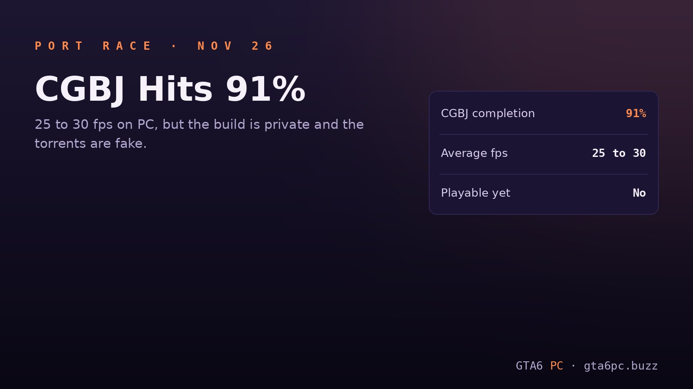
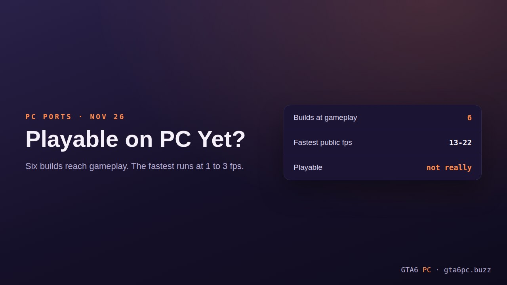
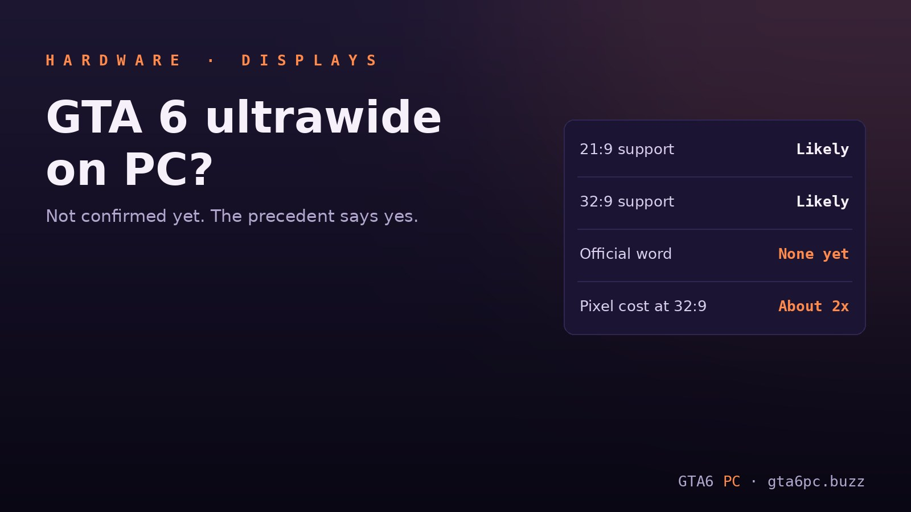
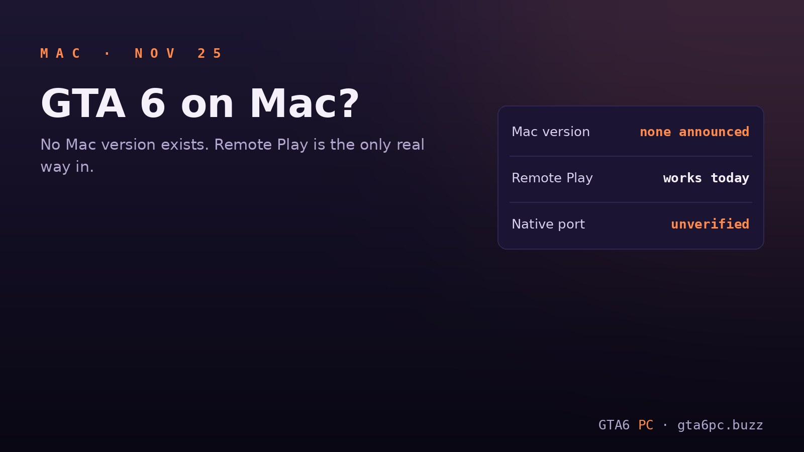
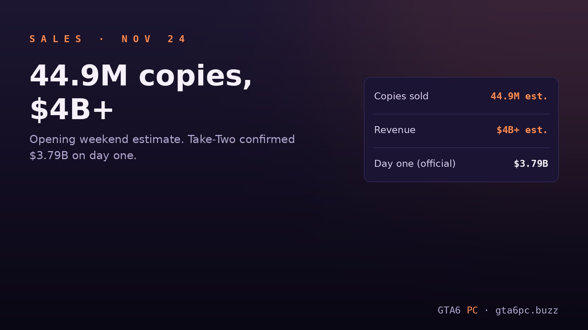
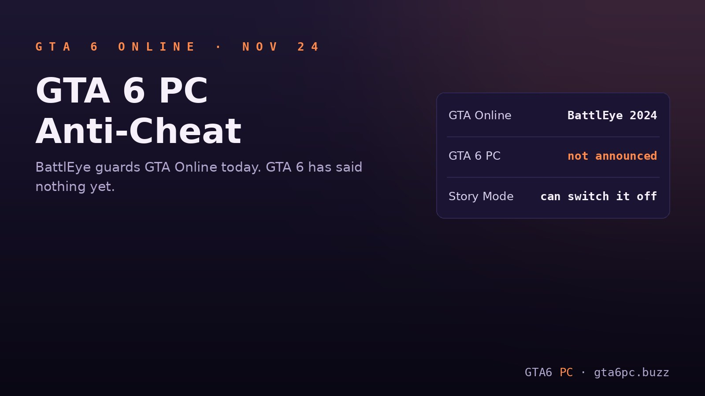
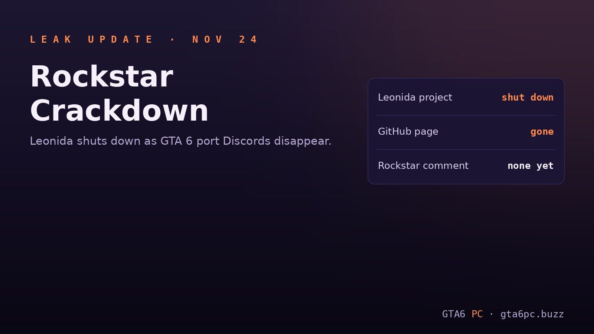
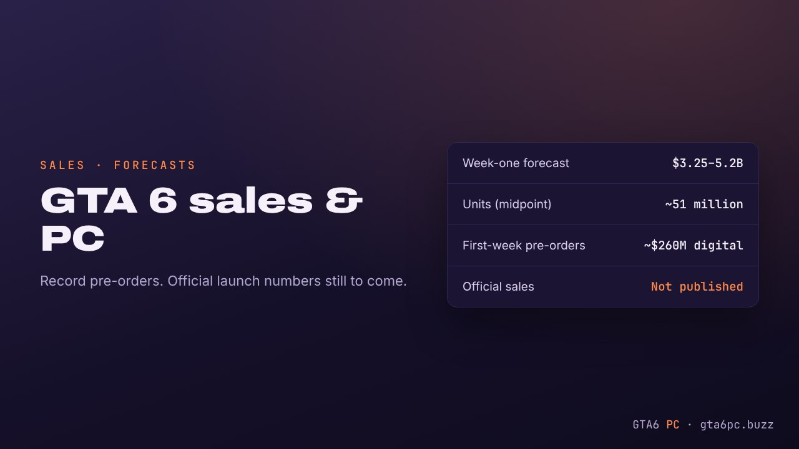
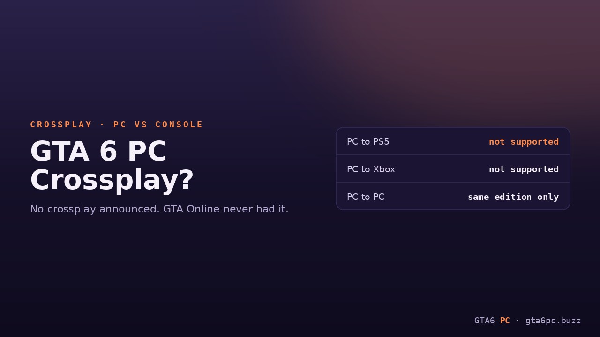

Release date & news
The GTA 6 PC release date, launch expectations, GTA 6 Online, sales and Take-Two news.

Port update, Nov 26GTA 6 PC Port Update, Nov 26: CGBJ Hits 91% and 25 FPS as Builds Reach Torrent Sites
The GTA 6 PC port race jumped forward on November 26, 2026. CGBJ reached 91 percent completion at 25 to 30 fps, AvatarManz hit 16 fps, and a build claiming to be CGBJ appeared on torrent sites. Nothing is playable or safe to download yet.
 GTA 6 on Switch 2
GTA 6 on Switch 2Is GTA 6 Coming to Nintendo Switch 2? What Take-Two and Nintendo Have Said
No Nintendo Switch 2 version of GTA 6 has been announced. Rockstar launched on PS5 and Xbox Series X|S only, Take-Two says platform news comes from Rockstar, and Nintendo says a port is Take-Two and Rockstar's call. The 2027 port claims are unconfirmed rumours.
 GTA 6 keyboard and mouse
GTA 6 keyboard and mouseWill GTA 6 on PC Support Keyboard and Mouse? What We Know So Far
GTA 6 has no native keyboard and mouse support on PS5 or Xbox, and there is no PC version yet. The only way to play with a keyboard and mouse on a PC today is Remote Play with a mapping tool, and the mouse only imitates a controller stick.
 GTA 6 in VR
GTA 6 in VRWill GTA 6 Support VR on PC? No VR Mode, No VR Mod, Only a Virtual Screen
GTA 6 has no VR mode and no VR mod, and Rockstar has announced nothing for headsets. The only way to play it in a headset today is the flat game on a virtual screen through PS VR2 Cinematic Mode or Quest Remote Play.
 March 2027 claim
March 2027 claimGTA 6 PC in March 2027? The GameGPU Claim and the Fake Online Press Release
GameGPU claims GTA 6 reaches PC in March 2027 with GTA 6 Online on the same day, and a fake AI-made press release says the same thing. Here is what each claim is actually based on, and why neither is an announcement.

Playable on PC?Is GTA 6 Playable on PC Yet? What 'Playable' Means in the Port Race
Six unofficial builds have reached interactive gameplay on PC, and one cleared the prologue at 1 to 3 fps. Here is what 'playable' means on the PortWatch tracker, why 1 to 3 fps is not playing, and what is still missing.
 Take-Two crackdown
Take-Two crackdownWill Take-Two Shut Down Every GTA 6 PC Port? What Happens After Leonida
Take-Two disabled 3,007 repositories to kill Leonida, and it has a history of suing fan rebuilds. Here is what the takedown means for VIctory and the other port projects, and why the race is going private.
 Forks race on
Forks race onGTA 6 PC Port Update, Nov 25: Forks Hit 12 FPS as Take-Two Takes Down 3,007 Repos
One day after in-game rendering, GTA 6 PC forks report 5 to 12 fps and a 77-minute play session. Take-Two answered with a DMCA takedown of the Leonida network, 3,007 repositories in total.

Ultrawide on PCWill GTA 6 Support Ultrawide on PC? 21:9 and 32:9 Explained
Rockstar has not confirmed ultrawide support for GTA 6 on PC yet. Here is what its last PC ports did, what 21:9 and 32:9 would cost in performance, and what to expect.

GTA 6 on MacIs GTA 6 on Mac? The Real Status, the Viral Clips, and How to Play
No Mac version of GTA 6 exists, and Rockstar has not announced one. Here is what the viral Mac clips really show, the only legitimate way to play on a Mac today, and the route a future PC version could open.
 In-game on PC
In-game on PCGTA 6 Reaches In-Game Rendering on PC, a Day After the Xbox Executable Leak
One day after the missing GTA 6 Xbox executable leaked, the unofficial PC port projects moved past the menus. VIctory now renders in-game graphics, and a private build called CGBJ reportedly lets a player move and talk to NPCs. Nothing is playable yet.
GTA 6 PC Port Tracker: How Portwatch Scores the Race to Play on PC
Portwatch is a live scoreboard for every unofficial attempt to run GTA 6 on PC. Here is how its scale works, what each milestone means, which projects it tracks, and how to tell a real milestone from a fake download.
 DLSS and FSR on PC
DLSS and FSR on PCWill GTA 6 on PC Support DLSS and FSR? What Rockstar's Last PC Port Tells Us
Rockstar has not announced a PC version of GTA 6, so DLSS and FSR support is not confirmed. But GTA 5 Enhanced, Rockstar's most recent PC release, shipped with Nvidia DLSS 3, AMD FSR 1 and 3, and Intel XeSS. That is the best evidence for what GTA 6 on PC will offer.

Opening weekend salesGTA 6 Opening Weekend Sales: 44.9 Million Copies and $4 Billion (Estimate)
Alinea Analytics estimates GTA 6 sold 44.9 million copies and made more than $4 billion in its first four days. Take-Two confirmed $3.79 billion on day one. Here is what is official and what is an estimate.
 Controller on PC
Controller on PCCan You Play GTA 6 on PC with a Controller? DualSense, Xbox and Mouse
Rockstar has announced nothing about GTA 6 on PC, so controller support is unconfirmed. But GTA 5 Enhanced on PC supports DualSense with adaptive triggers, Xbox controllers and full mouse and keyboard controls. Here is what to expect.
 VIctory vs XCL port race
VIctory vs XCL port raceGTA 6 PC Port Race, November 25: Walking Around In-Game at About 3fps
Forks of the VIctory project now let a player walk around inside GTA 6 on PC, at about 3 frames per second with black shadows. Here is where VIctory, XCL and the other port projects stand on November 25, and why nothing is playable yet.
 GTA 6 on GeForce Now
GTA 6 on GeForce NowWill GTA 6 Come to GeForce Now? Cloud Gaming on PC Explained
GTA 6 streams to Xbox consoles through Xbox Cloud Gaming, but not to PC. GeForce Now has no Rockstar games at all. Here is every cloud option for PC players, and what would have to change.

GTA 6 PC anti-cheatWill GTA 6 PC Use BattlEye Anti-Cheat? What We Know So Far
Rockstar added BattlEye to GTA Online on PC in September 2024, after nine years without official anti-cheat. Rockstar has said nothing about GTA 6 PC anti-cheat yet, but the GTA Online precedent points one way.

Rockstar crackdownTake-Two Confirms DMCA Takedown That Shut Down GTA 6 PC Port Project Leonida
Take-Two has confirmed it shut down Leonida, the fan project trying to run GTA 6 on PC, with a DMCA notice that removed 3,007 GitHub repositories. Here is what the notice says, what happened to the developers, and what is still running.
 Best GPUs
Best GPUsBest Graphics Cards for GTA 6 on PC: 1080p, 1440p and 4K (Estimates)
Which GPU will you need for GTA 6 on PC? Our estimates for 1080p, 1440p and 4K, based on how the game runs on PS5 Pro and Rockstar's past PC releases.
 Gaming laptops
Gaming laptopsWill GTA 6 Run on a Gaming Laptop? What to Look For (Estimates)
Planning to play GTA 6 on a laptop? Here's what kind of gaming laptop will likely handle it, what to avoid, and why storage and cooling matter as much as the GPU.
 Capture card guide
Capture card guideHow to Play GTA 6 on Your PC Monitor with a Capture Card
Want GTA 6 on your PC monitor, or to stream it? A capture card can show your PS5 or Xbox on your PC. Here's how it works, what to buy and how to avoid lag.
 Take-Two earnings
Take-Two earningsWhat Take-Two Said About GTA 6 (and PC) in Its Latest Earnings
Take-Two's November 2026 earnings call said GTA 6 pre-orders were far above expectations, but said nothing about a PC version. Here are the key takeaways.

Sales & PCGTA 6 Sales Forecasts: Record Pre-Orders and What PC Could Add
Analysts forecast $3.25–5.2 billion in GTA 6's first week. Here's what the pre-order records show, and why a PC release could add a second wave of sales.
 When on PC?
When on PC?When Is GTA 6 Coming to PC? Release Date Status (November 2026)
GTA 6 is out on PS5 and Xbox Series X|S, but Rockstar hasn't set a PC date. Here's the reported Q1 2027 window, what Rockstar's history suggests, and what to watch for.
 PC launch
PC launchGTA 6 PC Launch: What to Expect When It Arrives
What the GTA 6 PC launch will probably look like: which stores, which PC features, what hardware you'll need, and which claims to ignore until Rockstar confirms them.
 GTA 6 Online
GTA 6 OnlineGTA 6 Online on PC: Release Date and What We Know
GTA 6 launched on November 19, 2026 without an online mode, and Rockstar has still announced none. Reports point to a 2027 release for GTA 6 Online. Here is the launch picture, the hints in the game files, and what it means for PC players.
 Rockstar PC history
Rockstar PC historyEvery Rockstar PC Port and What It Says About GTA 6 on PC
From GTA IV to Red Dead Redemption 2, here's how long Rockstar's PC versions took, how they launched, and what that history suggests for GTA 6 on PC.
 PC Game Pass?
PC Game Pass?Will GTA 6 Come to PC Game Pass? What Microsoft, Rockstar and Take-Two Have Said
GTA 6 is not on Xbox Game Pass or PC Game Pass, and no inclusion has been announced. Here is what the stores show, why Take-Two avoids day-one subscription releases, and when a Game Pass debut could realistically happen.

PC crossplay?Will GTA 6 on PC Have Crossplay with PS5 and Xbox?
GTA 6 launches as a single-player game with no online mode and no crossplay announced. Here is what GTA Online's history says about crossplay, and what PC players should expect.
 PC pre-order?
PC pre-order?Can You Pre-Order GTA 6 on PC? What the Stores Actually Show
There is no GTA 6 PC pre-order anywhere. No Steam, Epic or Rockstar Launcher page exists, and no PC keys are real. Here is what the stores show and when a real pre-order could open.
 First patch live
First patch liveGTA 6 Update 1.002.002: First Patch Fixes Autosave, Crashes and More
Rockstar rolled out GTA 6 update 1.002.002 on November 23, 2026, the first patch since launch. It fixes autosave, crashes, stuck weather and more on PS5 and Xbox. Here are the full patch notes and what they mean for PC.
 Launcher required?
Launcher required?Will GTA 6 on PC Need the Rockstar Games Launcher?
Rockstar has not announced a PC version of GTA 6, so no launcher requirement is confirmed. But GTA V Enhanced, Rockstar's latest PC release, requires a Rockstar account and the Rockstar Games Launcher even on Steam. Here is what to expect.